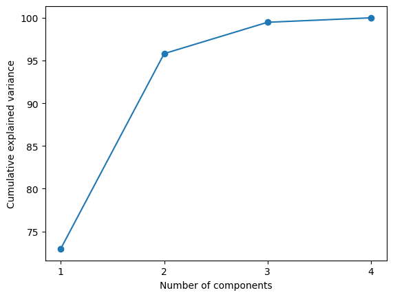
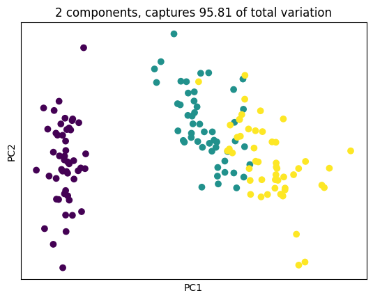
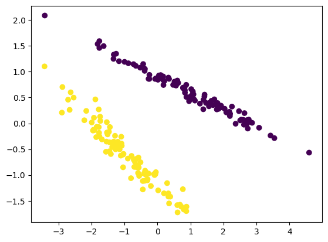
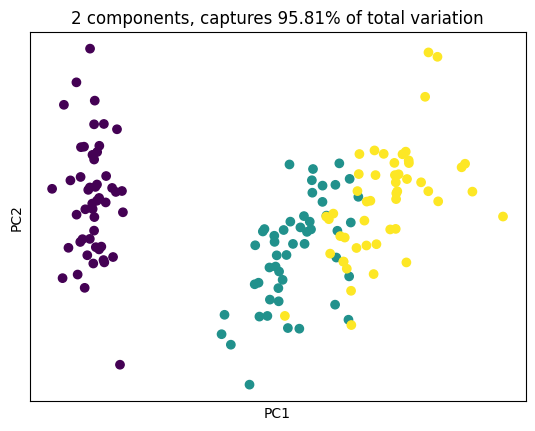

import numpy as np
from sklearn.datasets import load_iris
import matplotlib.pyplot as plt
iris = load_iris()
X = iris['data']
y = iris['target']
n_samples, n_features = X.shape
## you have to standardize data
def mean(x): # np.mean(X, axis = 0)
return sum(x)/len(x)
def std(x): # np.std(X, axis = 0)
return (sum((i - mean(x))**2 for i in x)/len(x))**0.5
def Standardize_data(X):
return (X - mean(X))/std(X)
def covariance(x):
return (x.T @ x)/(x.shape[0]-1)
## the reason you are able to do this is because
## expected value is 0. So accroding to Co-Variance fomula
## you escaped the 0. rh
## conviently this became just a inverse matrix mutliplication
X_std = Standardize_data(X)
cov_mat = covariance(X_std)Implementation of Principle Component Analyis
Statistics
from-scratch
One of the most common dimension reduction techniques
PCA From Scratch (Python Implementation with Numpy)
Factor Analysis actually use Co-Variance instead of Co-Efficiency Matrix?
What are Co-Variance?
So covariance is about a tenth of noraml variance when x and y is completely randomised? However, if x correlated with itself the result is actually larger? Yes. The larger the more correlated two variable are.
Next move on to eigen-vectors and eigen-values. You first heard of eigen in cordinate system. Eigen is a German word for ‘proper’, ‘characteristic’.
## checks assumptions for eigenvector
import numpy as np
eig_vals, eig_vecs = np.linalg.eig(cov_mat)
## verify eig val and eig vects
## this formula is definition of eigen decomposition
theo_mat = eig_vecs @ np.diag(eig_vals) @ eig_vecs.T
assert np.all(
np.round(theo_mat,6)
== np.round(cov_mat,6))
assert np.all(
np.round(cov_mat @ eig_vecs[:,0],6)
== np.round(eig_vecs[:,0] * eig_vals[0],6))
## actuall makes it very convinent for matrix dot product
assert np.all(
np.round(cov_mat @ eig_vecs,6)
== np.round(eig_vecs @ np.diag(eig_vals),6))# Then, we sort the tuples from the highest to the lowest based on eigenvalues magnitude
eig_pairs = [(np.abs(eig_vals[i]), eig_vecs[:,i]) for i in range(len(eig_vals))]
eig_pairs.sort(key=lambda x: x[0], reverse=True)
# For further usage
eig_vals_sorted = np.array([x[0] for x in eig_pairs])
eig_vecs_sorted = np.array([x[1] for x in eig_pairs])To explain what this process actually doing here:
The methods that require a covariance matrix to find the magnitude and direction of the data points use eigenvalues and eigenvectors. For example, the eigenvalues represent the magnitude of the spread in the direction of the principal components in principal component analysis (PCA).
https://builtin.com/data-science/covariance-matrix
# Select top k eigen-vectors
k = 2
W = eig_vecs_sorted[:k, :] # Projection matrixeig_vals_total = sum(eig_vals)
## eigen value is explained variance
explained_variance = [(i / eig_vals_total)*100 for i in eig_vals_sorted]
explained_variance = np.round(explained_variance, 2)
cum_explained_variance = np.cumsum(explained_variance)
print('Explained variance: {}'.format(explained_variance))
print('Cumulative explained variance: {}'.format(cum_explained_variance))
plt.plot(np.arange(1,n_features+1), cum_explained_variance, '-o')
plt.xticks(np.arange(1,n_features+1))
plt.xlabel('Number of components')
plt.ylabel('Cumulative explained variance');
plt.show()Explained variance: [72.96 22.85 3.67 0.52]
Cumulative explained variance: [ 72.96 95.81 99.48 100. ]
The classic elbow plot actually show us the eigen value after rotation.
Projection into a 2D space is actually just select the top 2 eigen-value, eigen-vector pair that collapse multiple dimension to 2.
As Grant Sanderson will explain, which is just projection into a 2D space. But what happens in this 2D space is the two dimension that happens to “Stretch Co-Variance” the most.
X_proj = X_std @ W.T
plt.scatter(X_proj[:, 0], X_proj[:, 1], c = y)
plt.xlabel('PC1'); plt.xticks([])
plt.ylabel('PC2'); plt.yticks([])
plt.title('2 components, captures {} of total variation'.format(cum_explained_variance[1]))
plt.show()
What does eigenvalue means in the context of covairance matrix?
Rotating a 2-D datasets go give you the same 2 dimension eigen value. Eigenvalues give magnitudes of principle components of data spread.

Note, in LDA this doesn’t happen
However, I’d like to add that above situation will not happen during LDA analysis. Because, everything would have been normalized. So in figure 2 is actually more like a big round pot.
PCA are not as good with grouped data
# %matplotlib widget
# change to widget for interactive
from IPython.display import HTML
from matplotlib import animation
sample_size = 100
x1 = np.random.normal(scale = 1, size = sample_size)
y1 = x1 * 0.2 + 3 + np.random.normal(scale=0.1, size=sample_size)
z1 = 0.5 * x1 + y1 + np.random.normal(scale=0.1, size=sample_size)
x2 = np.random.normal(scale = 1, size = sample_size)
y2 = x2 * 0.6 + 2 + np.random.normal(scale=0.1, size=sample_size)
z2 = 0.7 * x2 + 0.1 * y2 + np.random.normal(scale=0.1, size=sample_size)
x = np.append(x1,x2)
y = np.append(y1,y2)
z = np.append(z1,z2)
g = np.append(np.repeat(1,sample_size), np.repeat(0,sample_size))
figure = plt.figure()
ax=figure.add_subplot(111, projection="3d")
ax.scatter(x,y,z, c=g)
plt.show()
# fig = plt.figure()
# fig
# def animate(frame):
# ax.view_init(30, frame/4)
# plt.pause(.001)
# return fig
# anim = animation.FuncAnimation(fig, animate, frames=200, interval=50)
# HTML(anim.to_html5_video())
%matplotlib inline
m = np.array([x,y,z]).T
from sklearn.preprocessing import StandardScaler
from sklearn.decomposition import PCA
X_std = StandardScaler().fit_transform(m)
pca = PCA(n_components=2).fit(X_std)
X_pca = pca.transform(X_std)
figure = plt.figure()
ax=figure.add_subplot(111, projection="rectilinear")
ax.scatter(X_pca[:, 0], X_pca[:, 1], c=g)
plt.show()
This result is not good because PCA does not take any difference in class. This experiment dimenstrate that if you have grouped varible
In Scikit-Learn you use this package
from sklearn.preprocessing import StandardScaler
iris = load_iris()
X = iris['data']
y = iris['target']
X_std = StandardScaler().fit_transform(X)
from sklearn.decomposition import PCA
pca = PCA(n_components = 2).fit(X_std)
print('Components:\n', pca.components_)
print('Explained variance ratio:\n', pca.explained_variance_ratio_)
cum_explained_variance = np.cumsum(pca.explained_variance_ratio_)
print('Cumulative explained variance:\n', cum_explained_variance)
X_pca = pca.transform(X_std) # Apply dimensionality reduction to X.
print('Transformed data shape:', X_pca.shape)
plt.scatter(X_pca[:, 0], X_pca[:, 1], c = y)
plt.xlabel('PC1'); plt.xticks([])
plt.ylabel('PC2'); plt.yticks([])
plt.title('2 components, captures {}% of total variation'.format(cum_explained_variance[1].round(4)*100))
plt.show()Components:
[[ 0.52106591 -0.26934744 0.5804131 0.56485654]
[ 0.37741762 0.92329566 0.02449161 0.06694199]]
Explained variance ratio:
[0.72962445 0.22850762]
Cumulative explained variance:
[0.72962445 0.95813207]
Transformed data shape: (150, 2)
Conclusion
- PCA is based covariance a measurement of correlation of two product
- PCA is linear based algebra.
- Dimension reduction is in fact finding top “k” highest eigen value and their corresponding “eigen-vector”, they corresponding sets of co-efficiency (or scores) that each dimension contributes to (the latent factor).
- The resulting “k” dimension results in most explained variance been kept.